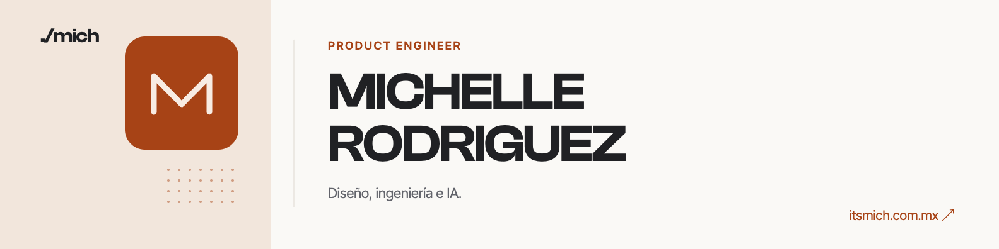
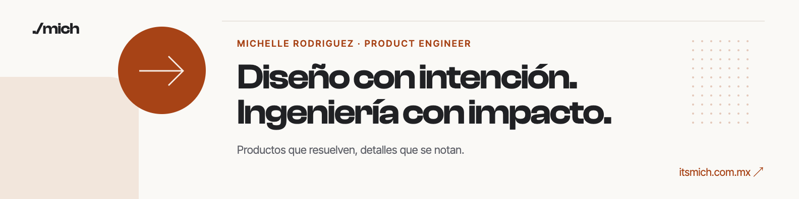
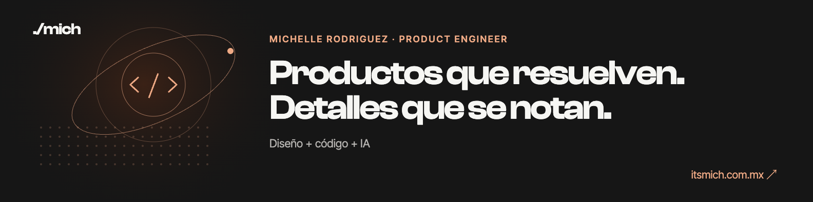
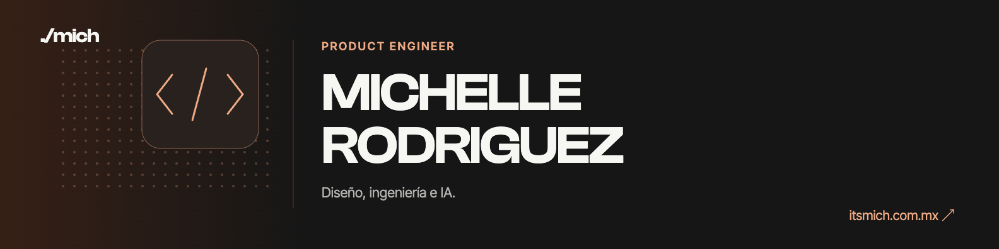

Cuatro variaciones para LinkedIn
Dos claras + dos oscuras · 1584 × 396 px
1A · Clara con monograma

Descargar PNG
1B · Clara editorial

Descargar PNG
2A · Oscura con órbitas

Descargar PNG
2B · Oscura con nombre

Descargar PNG